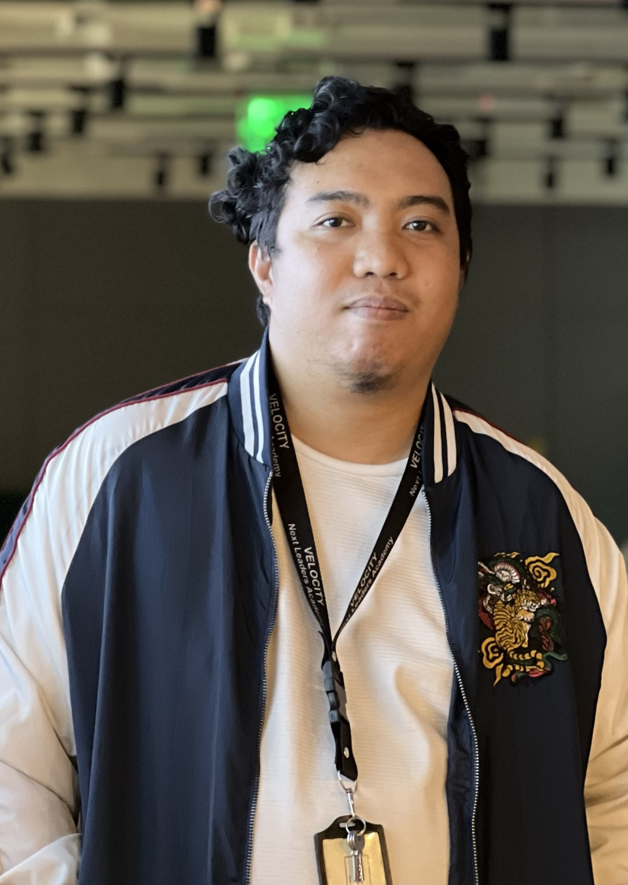

Orly Dadulla

Summary
Result-driven IT engineer seeking a
position to utilize my technical skills
and abilities and achieve professional
growth while being resourceful,
innovative and flexible.
Education
- Asian Institute of Computer Studies(2012-2017)
- Bachelor of Science in Computer Engineering
- Computer Technology
- Zuitt Co.(Developer Career Program)
Work Experience
Skills
Technical Skills
- Programming
- Hardware and Software Troubleshooting
- Incident Management
- Networking
Soft Skills
- Analysis
- Evaluation
- Keen to details
- Decision-making
- Creativity
Certificates and Training
- Cisco Networking Academy Certificate 1-4
(Cisco Networking Academy – Network Fundamentals, Routing
Protocols and Concepts, LAN switching and Wireless)
- Web Development Bootcamp – Zuitt Co.
(Front-end, Back-end, and Full-stack Web Development)
Others